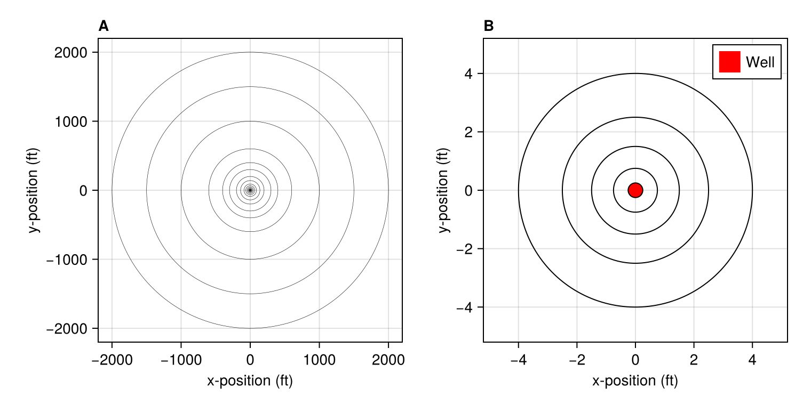
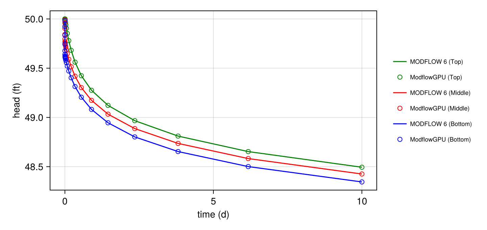
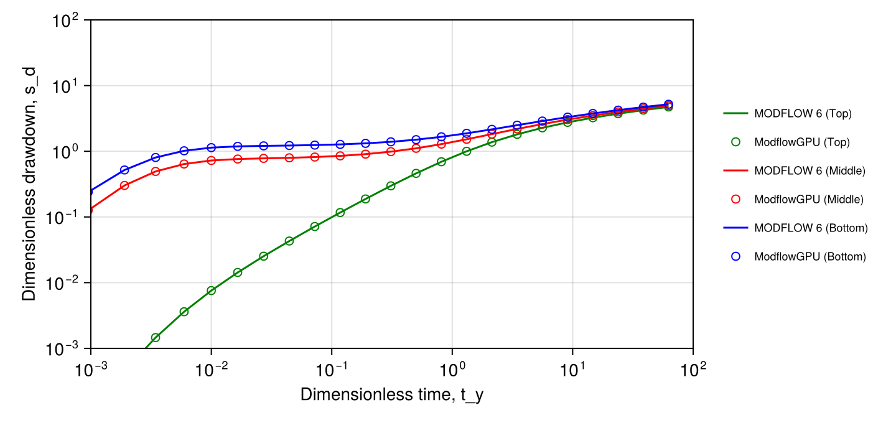
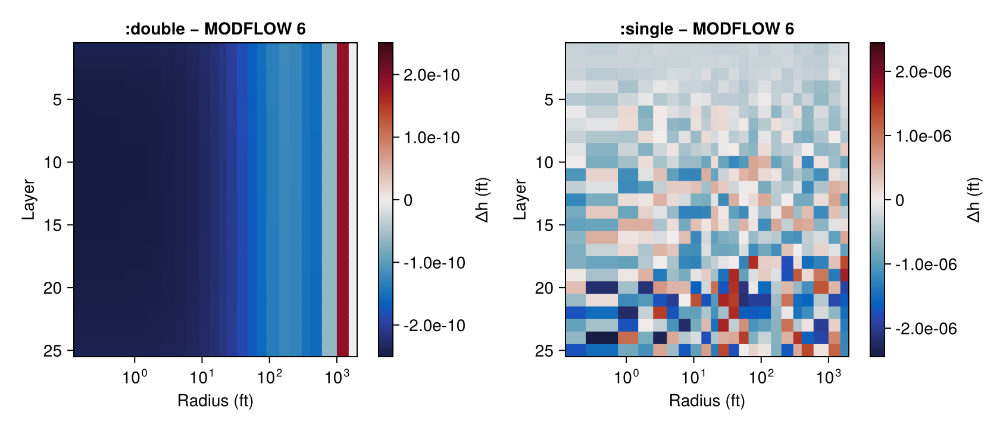

An axisymmetric model with DISU
A well pumping from the bottom of an unconfined aquifer, simulated as an axisymmetric (radial) model on an unstructured DISU grid (Bedekar and others, 2019): 25 layers of 2 ft, each with 22 radial bands from 0.25 ft to 2000 ft, so 550 cells. Each cell is a ring; its area and the connection widths and lengths of the DISU input describe the ring geometry. The well, 4000 ft³/d from the innermost band of the five bottom layers, pumps for 10 days in 24 time steps. The top layer is convertible storage (specific yield 0.1), so the water table falls near the well. Units are feet and days.
This is the MODFLOW 6 example ex-gwf-rad-disu. The example compares the drawdown at three depths, 40 ft from the well, with the analytical solution of Neuman (1974); the values of that solution are stored in the example's script and are not redrawn here. Instead the page compares ModflowGPU with MODFLOW 6 on the same input.
Input and the MODFLOW 6 run
ExampleTools (docs/ExampleTools.jl in the repository) takes the input from the released mf6examples.zip, sets the tight closures of the parity tests in the IMS file, and runs MODFLOW 6.8.2. With the absolute residual criterion of the tight closures MODFLOW 6 does not converge on this model, so its run uses the relative criterion (tight-relative), as the reference run of the parity tests does.
using ModflowGPU, CairoMakie
mf6 = example_run("ex-gwf-rad-disu"; mode = "tight-relative")
mf6.mode, mf6.mf6_time("tight-relative", 0.152170726)The ModflowGPU run
In :double and in :single precision on the CPU, with the AMG preconditioner: the model has no fixed heads and is nearly singular in its long late time steps, where BiCGSTAB with the default MC-ILU0 preconditioner stalls (the parity tests use AMG too).
runs = Dict(p => run_modflowgpu(mf6.dir, p; preconditioner = :amg) for p in (:double, :single))
r = runs[:double].result
r.convergedtrueThe grid
The DISU grid has no map view: its cells are rings. The outer radii of the 22 bands, here from the vertices of MODFLOW 6's binary grid file, drawn as circles: (A) all bands and (B) the first five, with the well (red), as in the MF6 example.
grb = read_grb(only(filter(endswith(".grb"), readdir(mf6.dir; join = true))))
radii = sort(unique(grb.data["VERTICES"][1, :]))[2:end]
circle(rad) = [Point2f(rad * cos(a), rad * sin(a)) for a in range(0, 2π; length = 200)]
fig = Figure(; size = (760, 380))
for (k, (n, title)) in enumerate(((length(radii), "A"), (5, "B")))
local ax = Axis(fig[1, k]; aspect = DataAspect(), title, titlealign = :left, xlabel = "x-position (ft)", ylabel = "y-position (ft)")
k == 2 && poly!(ax, circle(radii[1]); color = :red, label = "Well")
for rad in radii[1:n]
lines!(ax, circle(rad); color = :black, linewidth = k == 1 ? 0.3 : 1)
end
m = radii[n] * (k == 1 ? 1.1 : 1.3)
limits!(ax, -m, m, -m, m)
k == 2 && axislegend(ax; position = :rt)
end
save_figure(fig, "ex-gwf-rad-disu-grid")
Heads at the observation points
The heads at 40 ft from the well, at the top (layer 1), the middle (layer 13) and the bottom (layer 25) of the aquifer, the observations H_TOP, H_MID and H_BOT of the MF6 example: ModflowGPU (circles) and MODFLOW 6 (lines), read from the head files.
nodes = ("Top" => 12, "Middle" => 276, "Bottom" => 540)
grb.data["CELLX"][last.(collect(nodes))]3-element Vector{Float64}:
40.0
40.0
40.0hf = open_head_file(r.head_file)
hf6 = open_head_file(only(filter(endswith(".hds"), readdir(mf6.dir; join = true))))
t = ModflowGPU.head_times(hf)
series(file, n) = [vec(read_head(file, k))[n] for k in 1:length(file)]
colors = (:green, :red, :blue)
fig = Figure(; size = (720, 340))
ax = Axis(fig[1, 1]; xlabel = "time (d)", ylabel = "head (ft)")
for ((label, n), color) in zip(nodes, colors)
lines!(ax, t, series(hf6, n); color, label = "MODFLOW 6 ($label)")
scatter!(ax, t, series(hf, n); color = :transparent, strokecolor = color, strokewidth = 1, label = "ModflowGPU ($label)")
end
Legend(fig[1, 2], ax; labelsize = 9, framevisible = false)
save_figure(fig, "ex-gwf-rad-disu-obs-head")
The same in dimensionless form, as in the MF6 example: the drawdown s_d = 4π K b s / Q against the time t_y = K b t / (S_y r²), with K = 20 ft/d, the saturated thickness b = 50 ft, Q = 4000 ft³/d, S_y = 0.1 and r = 40 ft.
K, b, Q, Sy, rad = 20.0, 50.0, 4000.0, 0.1, 40.0
fig = Figure(; size = (720, 340))
ax = Axis(fig[1, 1]; xscale = log10, yscale = log10, xlabel = "Dimensionless time, t_y", ylabel = "Dimensionless drawdown, s_d")
ty = K * b .* t ./ (Sy * rad^2)
sd(h) = 4π * K * b .* (50.0 .- h) ./ Q
for ((label, n), color) in zip(nodes, colors)
lines!(ax, ty, sd(series(hf6, n)); color, label = "MODFLOW 6 ($label)")
scatter!(ax, ty, sd(series(hf, n)); color = :transparent, strokecolor = color, strokewidth = 1, label = "ModflowGPU ($label)")
end
limits!(ax, 1.0e-3, 100, 1.0e-3, 100)
Legend(fig[1, 2], ax; labelsize = 9, framevisible = false)
save_figure(fig, "ex-gwf-rad-disu-obs-dimensionless")
Comparison with MODFLOW 6
The head differences between ModflowGPU and MODFLOW 6 in every cell at the end of the run, by radius and layer, in both precisions.
h6 = vec(read_head(hf6, length(hf6)))
fig = Figure(; size = (840, 360))
for (k, p) in enumerate((:double, :single))
hp = open_head_file(runs[p].result.head_file)
dd = reshape(vec(read_head(hp, length(hp))) .- h6, length(radii), :)
m = maximum(abs, dd)
local ax = Axis(fig[1, 2k - 1]; xscale = log10, title = ":$p − MODFLOW 6", xlabel = "Radius (ft)", ylabel = "Layer", yreversed = true)
hm = heatmap!(ax, [radii[1] / 2; radii], 0.5:1:25.5, dd; colormap = :balance, colorrange = (-m, m))
Colorbar(fig[1, 2k], hm; label = "Δh (ft)", tickformat = expformat)
end
save_figure(fig, "ex-gwf-rad-disu-difference")
The largest head and budget differences, next to the values of the parity table, and the wall times (CPU: this build, including compilation for the first run of the session; GPU: the parity table, AMD Radeon RX 7800 XT). For this model the parity tests use other budget criteria: in :double, 10⁻⁵ of the total inflow, as a head difference of 2.5 × 10⁻¹⁰ ft to the tight-relative run of MODFLOW 6 gives a storage flow of 6 × 10⁻⁶ of the total inflow in the second time step (a very short step with large storage coefficients); in :single, the difference beyond the Float32 rounding of the flows, which the parity table shows. The raw :single budget difference shown here is large (up to about 0.6 of the total inflow), while the heads agree within a few micrometres: in the first, very short time steps (Δt = 6 × 10⁻⁵ d) the storage coefficients S_y × area / Δt are so large that the rounding of the Float32 heads shows in the storage flows (see What the presets mean for accuracy; use :mixed where such flows matter).
stats = Dict(p => (; cmp = compare_with_mf6(mf6.dir, runs[p]), runs[p].time) for p in (:double, :single))
comparison_table("ex-gwf-rad-disu", stats; unit = "ft", budget_limit_double = 1.0e-5, budget_limit_single = 1.0)| Preset | max |Δh| (ft), this build | max |Δh| (ft), parity table | Budget, this build | Budget, parity table | CPU time, this build (s) | GPU time, parity table (s) |
|---|---|---|---|---|---|---|
:double | 2.5e-10 | 2.5e-10 | 6.0e-06 | 6.0e-06 | 2.38 | 0.57 |
:single | 2.7e-06 | 2.7e-06 | 6.9e-01 | 2.9e-15 | 2.03 | 1.36 |
Budget: the largest difference of a budget-file flow or a listing-table rate, relative to the total inflow of its time step.